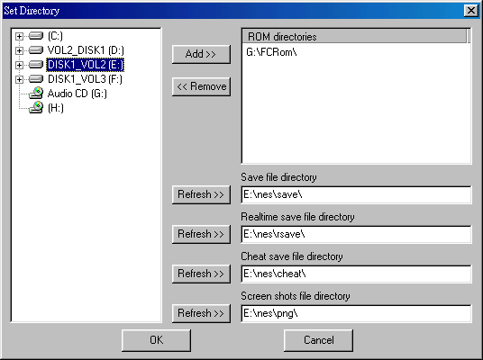
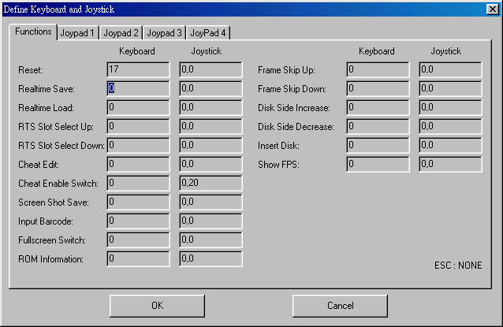
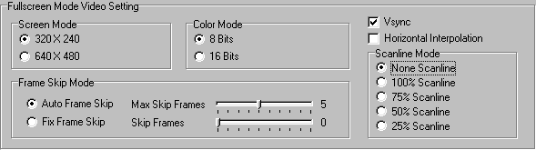
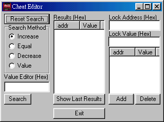

SMYNES HELP VERSION 1.0
Introduction of Nintendo Family Computer :
The Nintendo Family Computer was published during the 80s by Japanese Nintendo
company as a family game computer. At that time, the field of computer games were
intensively competed with one another. With various well representive works published ,
the Nintendo Family Computer became the most active family computer during the 80s and
90s. Basically, the structure of Nintendo machine is not complicate after all. It uses the
6502 CPU. In the aspect of sound, it uses two square waves, one triangle wave, one noise
and one PCM (two types). However, game suppliers were asking for the perfection towards
Nitendo games, and most of them added the extra sound chips into game cards. If those extra
sound chips were not emulated, then that particular games would appear the problem of
absence of sound. Not only that, various Nintendo games also included hardware equipments
while they were published. For example, "mahjong joystick", "swipping card
machine", "stuff puff motorbike", "shrewmouse joystick",
"dancing board" and "ray gum", etc. If these peripheral equipments
were not emulated, then the games might not be able to function properly.
SMYNES FEATURES :
SMYNES Emulates the master piece of Japanese Nintendo Family Computer. For that reason,
the accuracy of hardware emulation is therefore very high. Not only the difficulties in emulating the
Vbank and NMI have been solved, but also the sound probelm has been worked out by checking
against the actual Nintendo machine. These sound emulations are therefore not captured from the
spreaded infromation of internet. Since the sound was 100% emulated from the original
Japanese Nintendo Family Computer, please do have confidence in what you hear! So far,
some of the Taiwanes made and pirated Nintendo machines have abridged materials in making
the sound parts for saving money. The natural sounds of those Nintendo machine are of
course not as nice and accurate. Other than that, SMYNES has built in with the most
Japanes original verion of game database. As long as your games are dumped from the
correct Japanese verion roms, the information of games should be able to be displayed for
the convenience of everyone. In the case of European version, the complete infromation is
currently short of. Therefore, only English names are provided in the datatbase.
For those Japanese verion games that ought to have supported information, but those
information are not displayed, that means 90% of your roms have dumping problems. Surely, it
could also be our carelessness in missing typing some information. Nevertheless, we will continuely update the
database information. If you are definite that those games are dumped by yourself without problems, then please contact us
for the updating of new database. At the moment we are still searching for the rom of
mapper 2 "Athena" that was dumped from the original version card. We know that
this mapper 2 "Athena" is the only one with the problems in our emulation so
far.
SMYNS 1.0 Final UPDATING AND SUPPORTING ASPECT:
- 100% Assembly wrote CPU
- Complete Nintendo sound support
- Special sound track support (Complete Namco sound chip, Konami VRC6 sound chip and
Mapper 86 Jaleco sound support)
- Support three people/four people
- Complete Bandai swipping card machine games support (At the same time supports 8 codes
and 12 codes)
- Support any types of joysticks
- Most comprehensive in user interface support (almost any kind of settings that you can
think of and wish to have which can all be achieved)
- Cheat searching function
- Real time save and load function
- Most exclusive games database support (As long as the games are correctly dumped, the
information, such as names, will be displayed. As the database is still expanding, we
estimate there will be 2000 games included in the future)
- Animate game previewing function (No need any action for dumping pictures)
- Supports auto fire
- NSF file playing
- Image capture function (the file will be saved as PNG picture file)
SMYNES usage manual :
(First step)
When you first execute SMYNES.EXE file, the basic path setting
(picture 1) and the controlled button setting (picture 2) will jump out, as showen
below:
| (Picture 1)When
you see the appearence of this image, please first select the file that you stored the
Nintendo games from left window *.nes *.nz *.fds game path메then press the toppest
(Add>>)button, so that "ROM directories" is completed. Of course you can
add more "ROM directories" path if you have more than one directory. SMYNES will
automatically search for all the Nintendo games under that selected directory (including
sub-directory). As for other paths that are showen as below, please follow ROM's
directory path setting way. This enables your SMYNES to execute under best condition. |
| (Picture 2) This
is a very important setting image. If all the function keys have not been set then they
will not be to function, because SMYNES doesn't have the default key setting. We hope to
provide a most flexible conditions for the users to set functions for the keys. All the
function keys have "Keyboard" and "Joystick" these two parts for
setting. That means users don't have stick to keyboard setting. Some most common function
keys like "Chat Enable Switch" can also be set on the Joystick (as you wish).
About "Joypad1" please also set it up. Otherwise
games can't be started. The following is the meaning of function keys represent:
Resete : That means reset, restart new games
Realtime Save : The button for real time saving that
records the scheduled progress of the runnig games
Realtime Load : Real time loading (but firstly it has to
have the record of Realtime Save)
RTS Slot Select Up :This button can be used for the
selection of real time saving/loading of whatever records
RTS Slot Select Down : This button can be used for the
selection of real time saving/loading of whatever records
Cheat Edit : SMYNES Provides the function for everyone
freely searching the information of game characters. The cheat will be
automatically saved after the editing, and will be retrived when next time the game
starts.
Cheat Enable Switch : When you have successfuly used the
function of "Cheat Edit" to capture the information of the selected characters,
you only have to press "Cheat Enable Switch" button for the information to
disable temporary, until you press "Chat Enable Switch", then it will recapture
the original set infromation. This function is particlarly suitable for action games after
past the levels, and HP will recound from the zero.
Screen Shot Save : After pressing this button, the images
of the game will be presented with the less information, but the best qulity of PNGcc
format for the output. It will also be saved in the path that was set at the begining.
Input Barcode : This function can only be used under
Mapper 16 of DATCH swipping card machine that was publised by Bandai company. While you
are swipping the card character, you only need to press this button for a small window to
jump out asking you to enter 7 or 11 numbers to replace a swipping action.
Fullscreen Switch : Just need to press this button to
switch between window and full screen
ROM Information : Display the infromation of selected
games멯including file name and other information�^
Frame Skip Up : If the speed of the game is too slow메you
can press this button to omit certain part of images. Too much omission will have serious
jumping problems메and lead to block situation. However, this function can be used to
quickly jumped out those sections that you don't want to see.
Frame Skip Down : It is opposite to the "Fram Skip
Up"
Disk Side Incras : read *.fds while you are playing the
games with Nintendo family computer disk system, when it reaches the time of switching to
another side, you need to apply the method of increasing or decreasing the disk code to
replace the switching action.
Disk Side Decreas : read *.fds while you are playing the
games with Nintendo family computer disk system, when it reaches the time of switching to
another side, you need to apply the method of increasing or decreasing the disk code to
replace the switching action.
Inser Disk : When switching disk message appears in the
middle of game progress, you just need to change the disk and press this button for the
game to restart.
Show FPS : One of the most important functions. It tells
you the speed of how many pictures execute per second on the frame while the game is
progressing. If everything progresses smoothly, the number should be about 60. However,
the number is mostly displayed between 58~60. The smaller the number is displayed, the
worst the frame block problem appears. Users can use this function in the beginning to
help them contrasting among different display mode, to find out what display mode will
present the best frame condition. |
(Step 2)
 When you see this
image appears, congratulate you, the setting procedure is almost completed. What you need
to do now is to select a game from the game menu. The right corner preview window will
automatically display the animated game image. Press twice for the game to start. When you see this
image appears, congratulate you, the setting procedure is almost completed. What you need
to do now is to select a game from the game menu. The right corner preview window will
automatically display the animated game image. Press twice for the game to start. |
멯Step 3 - Extra Setting�^
| You may already
discover that not all the games information displayed on the display windows that are all
necessary for you to see. Let's say you are using the Chinese version of SMYNES. The
column with information of Japanese files is therefore no as necessary. These columns can
be adjusted according to your needs. You simply need to drag mouse to the column that you
don't need or want to change the size, the sign of mouse will become adjustable left and
right arrow for you to adjust the column. And this adjusted columns will be recorded by
SMYNES. So there is no need for resetting when next time you execute SMYNES. |
Usage Query FAQ멚
Q1 : Why my game in SMYNES cannot be showen with game information?
A1 : The most possible answer towards this problem is that your rom is not dumped from a
Japanese version game card. Our game information has currently stored only 1245 Japanese
version games. Of course, it could be our carelessness in omitting some of game
information. However, it could also be the problems with the version of which game was
dumped from.
Q2 : SMYNES execute so slow on my computer. Is there any way to improve it?
A2 : Currently SMYNES is obviously slower in the S3 series of video cards. I don't really
have answers for a such situation, but you can try to go to "Emulator Setting"
and choose the second function "NES Emulator Video Setup". After that, please
follow the picture below for the rest set up - tick the bottom function "Default
Fullscreen Mode" , and this will make some sort of speed improvement.

If it is still too slow, please select "NES Emulator Sound Setup" Setupand
change "Sound ngine Select" to "Engine 2 (Fast)" (As the image below)
This should improve the speed, but diminishes the quality of sound.

Q3 : Why the games of Mapper 5, 6, 8, 17, 96, 188 cannot be executed?
A3 : At the moment, SMYNES hasn't emulated 3 mappers - Mapper 5, 96, 188. However, the
next SMYNES version might do it. About other 3 mappers- Mapper 6, 8, 17, the files of
those games are reconstructed by "FFE" family computer disk system, and those
games themselves have been changed. Therefore, SMYNES is not going to support those
changed, reconstructed and error version of those Mapper 6, 8 and 17 games at the moment.
In fact the correct version of those games can be easily find from the internet.
Q4 : How can you use the cheat function that is provided by SMYNES?
A4 : While you are playing games, what you need to do is to press the set "Cheat
Editor" button. Then, it will pop up the picture just like below

For the first searching, please press "Reset Search" and then press
"Exit". When the searched infromation is changed after playing games, you need
to call the editing image, like increasing and decreasing. Of course, you can straight
choose "Value" to enter number if you know what is the correct number. Please be
awared that the number is made up by 16 bites. The search might not be able to carry out
if the number is bigger than 9. Then press "Search" after finish chosing, the
searched numbers will be appeared in the middle section of the image. Repeat the above
actions by trying to change the locked information while playing the games. When there is
only one set (or less) left in the middle section, you can then click twice in this
section. At that moment, "Lock Address (Hex)" will appear in this section. You
then only need to enter the lucked number in the "Lock Valu (Hex) below, and press
"Add" . If you want to stop the lock while playing the game, you can press the
self pre-set button Cheat Enable Switch. However, you will get the hand of it with several
practices. Also, these searched cheats will be automatically saved. They will be loaded
when next time you start the game, which no search is required.
Q5 : Can I change the screen color of the game if I don't like it?
A5 : YES메SMYNES has 9 types of color pallets, and it also includes most color pallets
that are used by other famous emulators! You are free to choose any kind of color pallets.
Of course, SMYNES also provides two self defined color pallets for users (No.0 and No.1
color pallet). These two set color pallets can be freely defined, and save and read
functions can also be perfomed there.
Q6 : Why is there a word "DEMO" in the middle of screen?
A6 : SMYNES is a software that needs to be registed. There will be a word "DEMO"
in the middle of the screen before the registration, and a 5 minutes limiation for playing
games. If you believe SMYNES is a good software, please support me by registrations. This
will also help me to build up my confidences to complete other better emulators. :)
Q7 : How much is the registration fee? How can I register SMYNES? Is the later updated
version of SMYNES free of charge? How about if SMY has published other registered EMU in
the future, would SMYNES registered users get certain kind of discount?
A7 : The registration fee is NT$300 (New Taiwanese Dollars). There are two ways to be
registered - by sending the actual money or transfering the account. Please refer to the
end of this text for the more detailed information. :) That's right! Once you have
registered SMYNES, any updated SMYNES will be free of charge. If SMYNES registeration has
been strongly supported by everyone, we will shortly develop more of best EMU. All SMYNES
members will get discount by that time. :)
Q8 : Why SMYNES is carried out by the registration way? Isn't free of charge great?
A8 : After you have executed SMYNES, if you find that other version of EMU - which are
free of charge - are either no difference or even better than SMYNES, then there is no
needed for you to use SMYNES. Frankly, there are already many good and free of charge NES
EMU existed in this field, such as Famtasia, Fwnes, NESten, Nesticle, etc. However, only
the developing process of SMYNES have already spent us more than thousands of working
times and countless Taiwanese money (such as buying the equipment of Nintendo Family
Computer, making hareware testing cards, etc). The fees are all very dear! Because of
these investement, SMYNES has reached an estimated of 97% accuracy in emulating Nintendo
Family Computer. Only some of the errors of computers that are either too difficult or
almost impossible to be adjusted are left currently, such as in the games of car racing in
making a turn that sometimes lead to the disturbance of images. If you appreciate SMYNES,
please support us in developing other even better emulators. :)
Q9 : May I please ask whether SMY has plans in developing other types of EMU?
A9 : There is none currently as SMYNES has already spent too much my effort and money. At
this stage, I'll only hope to present a even better version of SMYNES to those registered
users. After all, I want to present the best! Of course when the developing of SMYNES has
reached a certain limit, I'll then consider to develop other EMU.
Q10 : What is the function of Mapper 86
Jaleco sound file that is provided on the website?
A10 : This is the file especially supported"Moero!! Pro Yakyuu", because there
is a special sound chip in "Moero!! Pro Yakyuu". So far, there is not other
emulators to support such function. If you have this game, then you will be able to
listen a real person's recorded voice just like from a real card while you are playing the
game! You must try it :) However, other versions of "Moero!! Pro Yakyuu" will
not have a such function supported at the moment. They will be supported in the next
version of SMYNES.
Q11 : Why I can't play Disk System roms ?
A11 : Well, you will need DISKROM.SYS file, this is a BIOS image frome the the Family
Computer Disk System, you can find this file on the net very easy, and FWNES also use this
file to load Disk System roms :)
Q12 : Where can I get the help if I still have other questions?
A12 : I already asked Billy Jr. to help me to insert a discussion board on the net.
Therefore, you can express any kind of questions when the discussion board is ready.
How to apply registration:
(Method One)
Complete your personal details in "order.txt" print it out and sent it with
$10 U.S Dollars or $300 New Taiwanese Dollars or money order US$15 to the P.O Box which shows as below
Ming-Yu Shih
Post Code 333
Taoyuan Post Office Box 19-79, Taiwan
P.S: Please provide your details with clear hand writtings if you don't have a printer,
especially the E-mail information. Otherwise, we will have difficulties to find you, and
to provide and send registered file to you
Special Thanks to
Billy Jr. <--- The monster who .. pushed me to
start a such difficult work of writing SMYNES
Conan Supports the information of games
Frankkao Helps building the database of games
KATANA Supports cards and other peripheral equipments
Mr. Lee Provides hardware technical supports
Postman Supports cards and other peripheral equipments
WOOD Provides suppports in technique and information
Pei-I and Pei-Ying Shih Translated Chinese readme version
into English version with spiritual supports
And every users who helps in testing and registering SMYNS :)
SMY 2000/5/27